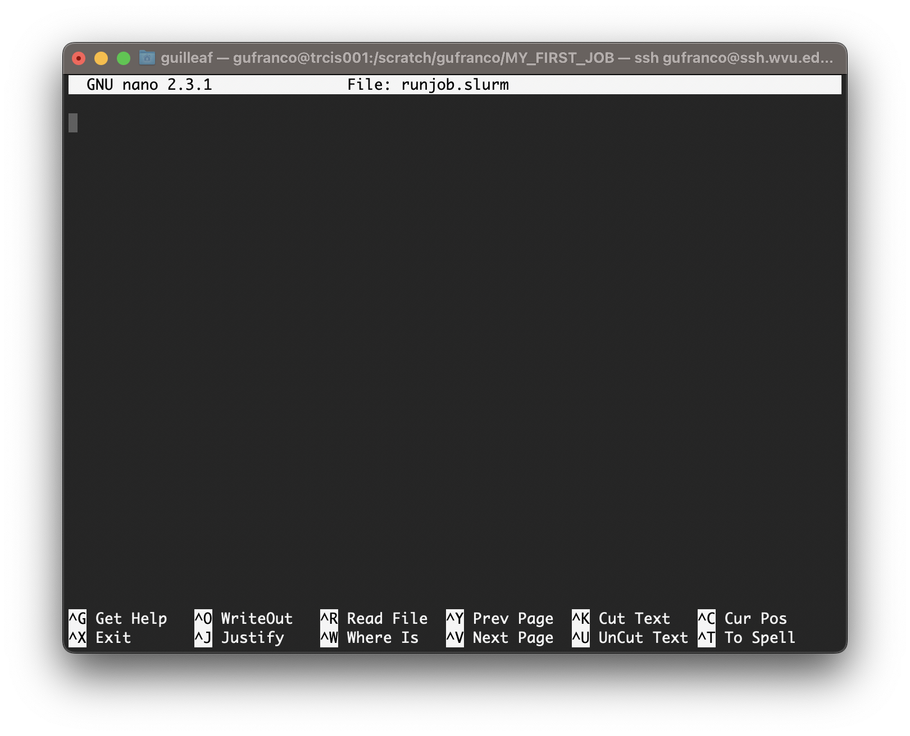
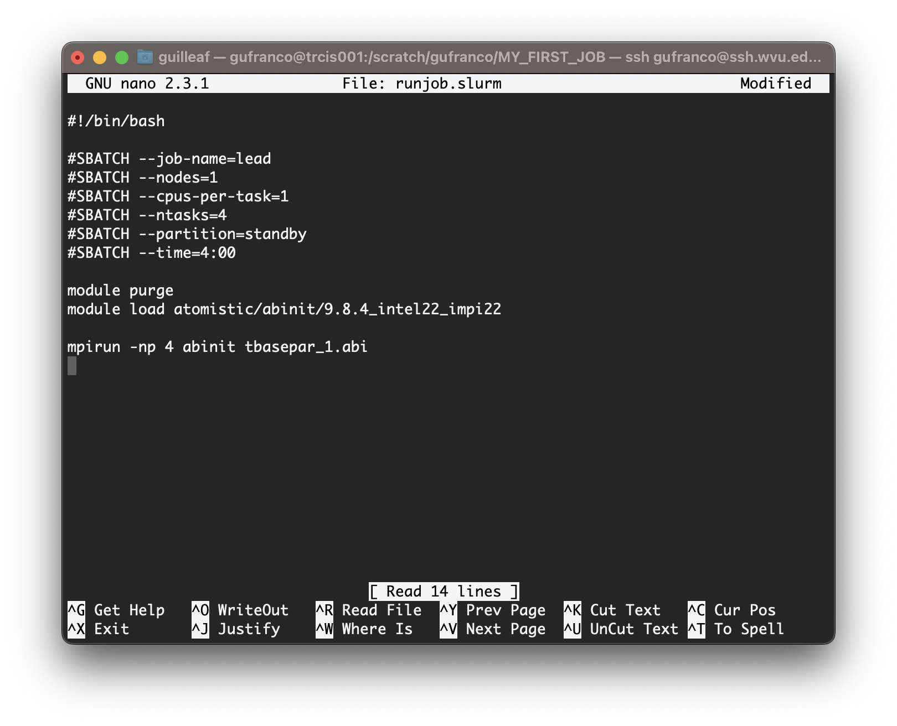

The Life Cycle of a Job
Last updated on 2025-08-18 | Edit this page
Overview
Questions
- “Which are the typical steps to execute a job on an HPC cluster?”
- “Why I need to learn commands, edit files and submit jobs?”
Objectives
- “Execute step by step the usual procedure to run jobs on an HPC cluster”
In this episode will will follow some typical steps to execute a calculation using an HPC cluster. The idea is not to learn at this point the commands. Instead the purpose is to provide a reason to why the commands we will learn in future episodes are important to learn and grasp an general perspective of what is involved in using an HPC to carry out research.
We will use a case very specific in Physics, more in particular in Materials Science. We will compute the atomic and electronic structure of Lead in crystalline form. Do not worry about the techical aspects of the particular application, similar procedures apply with small variations in other areas of science: chemistry, bioinformatics, forensics, health sciences and engineering.
Creating a folder for my first job.
The first step is to change our working directory to a location where we can work. Each user has a scratch folder, a folder where you can write files, is visible across all the nodes of the cluster and you have enough space even when large amounts of data are used as inputs or generated as output.
~$ cd $SCRATCHI will create a folder there for my first job and move my working directory inside the newly created folder.
~$ mkdir MY_FIRST_JOB
~$ cd MY_FIRST_JOBGetting an input file for my simulation
Many scientific codes use the idea of an input file. An input file is just a file or set of files that describe the problem that will be solved and the conditions under which the code should work during the simulation. Users are expected to write their input file, in our case we will take one input file that is ready for execution from one of the examples from a code called ABINIT. ABINIT is a software suite to calculate the optical, mechanical, vibrational, and other observable properties of materials using a technique in applied quantum mechanics called density functional theory. The following command will copy one input file that is ready for execution.
~$ cp /shared/src/ABINIT/abinit-9.8.4/tests/tutorial/Input/tbasepar_1.abi .We can confirm that you have the file in the current folder
~$ ls
tbasepar_1.abiand get a pick into the content of the file
~$ cat tbasepar_1.abi
#
# Lead crystal
#
#Definition of the unit cell
acell 10.0 10.0 10.0
rprim
0.0 0.5 0.5
0.5 0.0 0.5
0.5 0.5 0.0
#Definition of the atom types and pseudopotentials
ntypat 1
znucl 82
pp_dirpath "$ABI_PSPDIR"
pseudos "Pseudodojo_nc_sr_04_pw_standard_psp8/Pb.psp8"
#Definition of the atoms and atoms positions
natom 1
typat 1
xred
0.000 0.000 0.000
#Numerical parameters of the calculation : planewave basis set and k point grid
ecut 24.0
ngkpt 12 12 12
nshiftk 4
shiftk
0.5 0.5 0.5
0.5 0.0 0.0
0.0 0.5 0.0
0.0 0.0 0.5
occopt 7
tsmear 0.01
nband 7
#Parameters for the SCF procedure
nstep 10
tolvrs 1.0d-10
##############################################################
# This section is used only for regression testing of ABINIT #
##############################################################
#%%<BEGIN TEST_INFO>
#%% [setup]
#%% executable = abinit
#%% [files]
#%% files_to_test = tbasepar_1.abo, tolnlines=0, tolabs=0.0, tolrel=0.0
#%% [paral_info]
#%% max_nprocs = 4
#%% [extra_info]
#%% authors = Unknown
#%% keywords = NC
#%% description = Lead crystal. Parallelism over k-points
#%%<END TEST_INFO>In this example, a single file contains all the input needed. Some other files are used but the input provides instructions to locate those extra files. We are ready to write the submission script
Writing a submission script
A submission script is just a text file that provide information
about the resources needed to carry out the simulation that we pretend
to execute on the cluster. We need to create text file and for that we
will use a terminal-based text editor. The simplest to use is called
nano and for the purpose of this tutorial it is more than
enough.
~$ nano runjob.slurm
Type the following inside nano window and leave the editor using the command Ctrl+X. Nano will ask if you want to save the changes introduced to the file. Answer with Y It will show the name of your file for confirmation, just click Enter and the file will be saved.
BASH
#!/bin/bash
#SBATCH --job-name=lead
#SBATCH --nodes=1
#SBATCH --cpus-per-task=1
#SBATCH --ntasks=4
#SBATCH --partition=standby
#SBATCH --time=4:00
module purge
module load atomistic/abinit/9.8.4_intel22_impi22
mpirun -np 4 abinit tbasepar_1.abi
Submitting the job
We use the submission script we just wrote to request the HPC cluster to execute our job when resources on the cluster became available. The job is very small so it is very likely that will execute inmediately. However, in many cases, jobs will remain in the queue for minutes, hours or days depending on the availability of resources on the cluster and the amount of resources requested. Submit the job with this command:
~$ sbatch runjob.slurmYou will get a JOBID number. This is a number that indentify your job. You can check if your job is in queue or executed using the commands
This command to list your jobs on the system:
~$ squeue --meIf the job is in queue or running you can use
~$ scontrol show job <JOBID>If the job already finished use:
~$ sacct -j <JOBID>What we need to learn
The steps above are very typical regardless of the particular code and area of science. As you can see to complete a simulation or any other calculation on an HPC cluster you need.
- Execute some commands. You will learn the basic Linux commands in the next episode.
- Edit some text files. We will present 3 text editors and among them
nano, the editor shown above. - Select a software to run. We are using ABINIT and for it we are using some environment modules to access this software package.
- Submit and monitor jobs on the cluster. All those are Slurm commands and we will learn about them.
In addition to this we will also learn about data transfers to copy files in and out the HPC cluster and tmux, a terminal multiplexer that will facilitate your work on the terminal.
- “To execute jobs on an HPC cluster you need to move across the filesystem, create folders, edit files and submit jobs to the cluster”
- “All these elements will be learned in the following episodes”